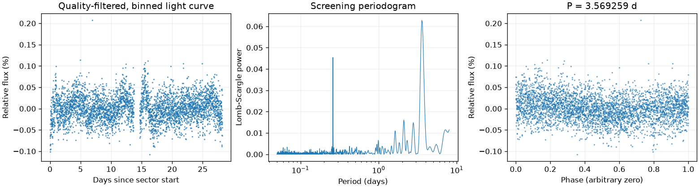

Sector 14 · 0.260060 天
相对幅度估计 0.0242% · 有效点数 18422

Screening peak only; no correlated-noise false-alarm calibration or physical classification.
这是筛选报告，未确认新发现，也不能代替 VSX 提交材料。
图中依次为亮度随时间变化、候选周期强度和折叠后的重复形状。相位零点仅供展示；纵轴是相对通量，不是标定星等。
相对幅度估计 0.0242% · 有效点数 18422
Screening peak only; no correlated-noise false-alarm calibration or physical classification.
相对幅度估计 0.0272% · 有效点数 19606

Screening peak only; no correlated-noise false-alarm calibration or physical classification.
相对幅度估计 0.0284% · 有效点数 15328

Screening peak only; no correlated-noise false-alarm calibration or physical classification.
像素峰值诊断不能替代精细来源拟合或正式查找星图。
{
"ra_deg": 293.072060183829,
"dec_deg": 70.4409570423514,
"catalog_queries": [
{
"source": "VSX",
"status": "historical_snapshot",
"checked_at": "2026-11-09",
"note": "Archived neighborhood query only; identity and novelty not fully reviewed."
}
],
"vsx_neighbors": [
{
"Name": "GSC 04448-01982",
"AUID": "000-BMW-429",
"RA2000": "293.13433",
"Declination2000": "70.44719",
"VariabilityType": "EW",
"Period": "0.520446",
"Epoch": "2458417.74",
"MaxMag": "13.29 V",
"MinMag": "13.51 V",
"Discoverer": "Mariusz Bajer",
"Category": "Variable",
"OID": "625294",
"Constellation": "Dra",
"sep_arcsec": 78.3193286518671
}
],
"notes": [],
"errors": [],
"repeatability": {
"status": "inconsistent",
"fractional_spread": 12.717012553815456,
"tolerance": 0.05,
"note": "Heuristic screening comparison, not period-error or long-term phase-coherence validation."
},
"localization": {
"status": "likely_contaminated",
"target_pixel": [
4.371100255026263,
4.182059685067802
],
"peak_pixel": [
4,
0
],
"target_peak_distance_pixels": 4.198492420947066,
"neighbors": [
{
"name": "GSC 04448-01982",
"x": 3.807367752314626,
"y": 0.2931447609024853,
"distance_from_peak_pixels": 0.35077205375128534,
"period_d": 0.520446,
"period_harmonic_fractional_error": 1.825877218952776e-05
}
],
"possible_contaminant": {
"name": "GSC 04448-01982",
"x": 3.807367752314626,
"y": 0.2931447609024853,
"distance_from_peak_pixels": 0.35077205375128534,
"period_d": 0.520446,
"period_harmonic_fractional_error": 1.825877218952776e-05
},
"limitations": "Heuristic peak/harmonic matching; no PRF fit, localization uncertainty or correlated-noise significance. This is not a submission finding chart.",
"plot": "results/259238257/pixels.png",
"plot_sha256": "5a857b06607c5b68b25a2b33e5b1fb9d178166bfe256cefe20c8c6833bcebf76",
"pixel_input": {
"uri": "mast:TESS/product/tess2024300212641-s0085-0000000259238257-0282-s_tp.fits",
"sha256": "ed69164fabf1ba98ba19c880e1b14d216f49ecc54b5806cce14e07878b8c6802"
}
},
"submission": {
"name": null,
"ra_deg": null,
"dec_deg": null,
"coordinate_source": null,
"coordinate_epoch": null,
"variability_type": null,
"period_days": null,
"period_error_days": null,
"epoch": null,
"epoch_time_standard": null,
"epoch_event": null,
"max_magnitude": null,
"min_magnitude": null,
"passband": null,
"magnitude_source": null,
"mean_magnitude": null,
"amplitude_magnitude": null,
"amplitude_passband": null,
"discoverers": null,
"references": null
}
}